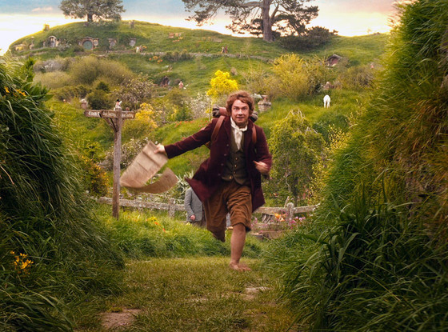
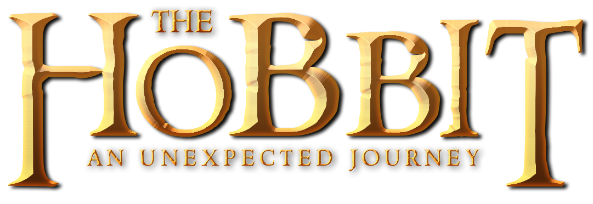
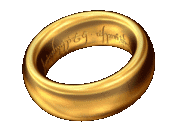

Optie 1
Music On/Off
Over het spel
Dit spel gaat over The Hobbit:
An Unexpected Journey
. Het is het eerste deel van de driedelige filmreeks gebaseerd op het gelijknamige boek van J.R.R. Tolkien.
Je loopt het verhaal door zoals in de film. Je kan de muziek aan of uit zetten. Volg de instructies op het scherm. Klik op de
"Play Game"
knop om te beginnen!

 